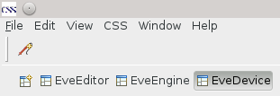
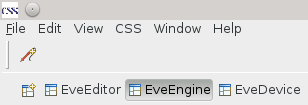

To monitor and/or manipulate devices activate the EveDevice Perspective:

Then you can begin adding devices to the Device Inspector.
To execute a scan activate the EveEngine Perspective:

Afterwards you can add a scan to the playlist which should be executed.